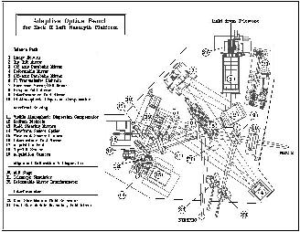

| Optics Bench Overview:  |
Like most AO system, the incoming light from the natural guide star
is split in two parts by an IR transmissive dichroic (see
the Optics Bench Overview): the visible and the near infrared (NIR) channels. The wavefront distortion is the same at all wavelengths, but corresponds to a smaller fraction of a wave for the NIR domain compared to the visible. For the same correction applied to the light, the image quality will be better at longer wavelengths. As a consequence, the visible part of the light is used for wavefront sensing and the NIR part is sent towards the science instrument or the interferometric tunnel. The analysis of the light is made using a wavefront sensor. A real time computer gets the information from the wavefront sensor and given the telescope pupil geometry and other system parameters, sends the voltages to apply to the actuators of the tip-tilt (TT) and deformable mirrors (DM). |
| Last update : 01/25/2001 by Keck AO Team | © W. M. Keck Observatory (2001) |